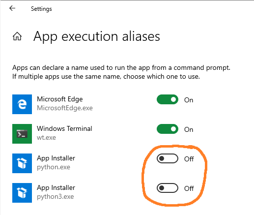
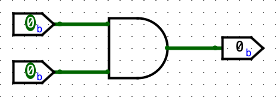
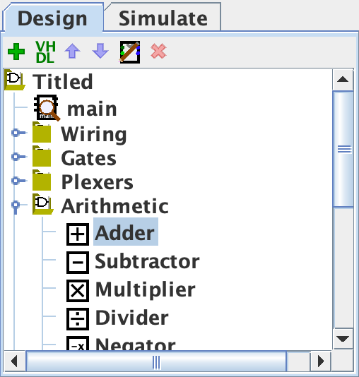
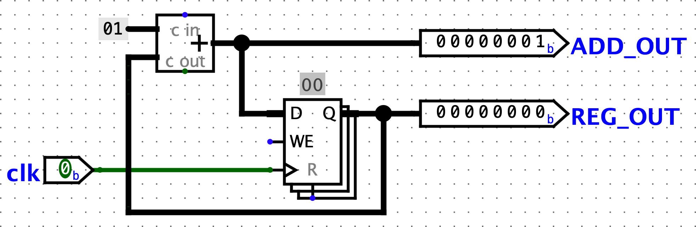
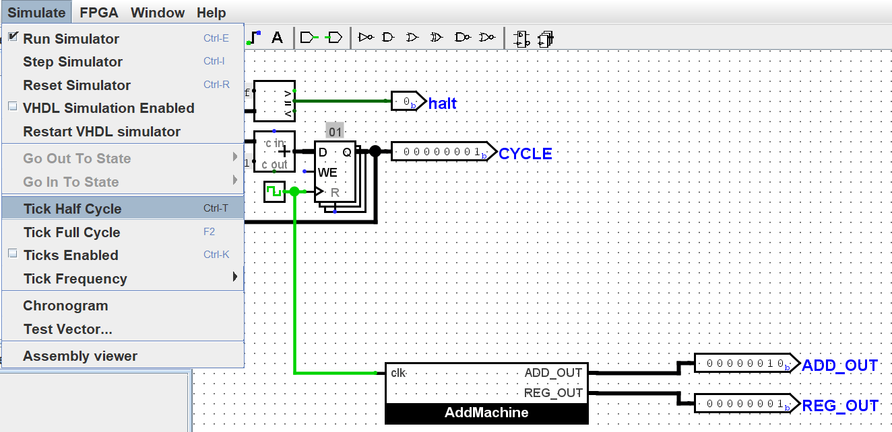
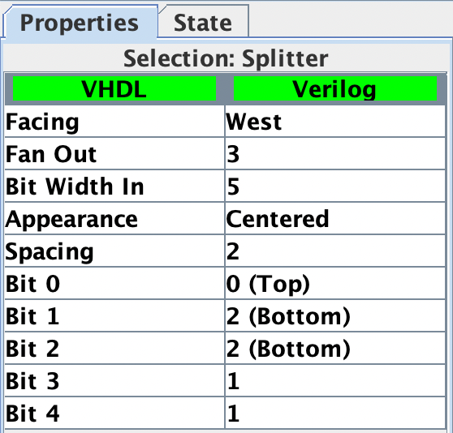
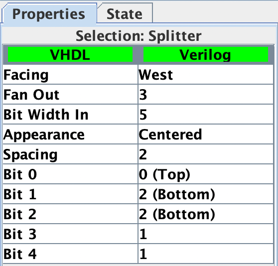
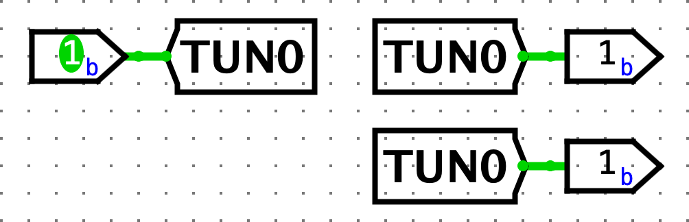
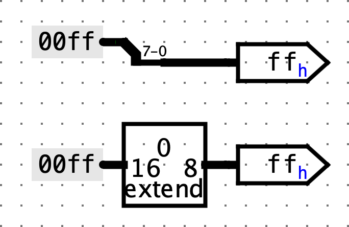

Lab 5: Logisim
Deadline: Thursday, July 18, 11:59:59 PM PT
This lab introduces Logisim - an educational tool for designing and simulating digital logic circuits. It is critical prep for Project 3.
Setup
You must complete this lab on your local machine. See Lab 0 if you need to set up your local machine again.
In your labs directory on your local machine, pull any changes you may have made in past labs:
Still in your labs directory on your local machine, pull the files for this lab with:
If you run into any git errors, please check out the common errors page.
Still in your labs directory, run the following command to download the newest version Logisim:
bash tools/download_tools.sh
All the work in this lab will be done using Logisim Evolution.
Some important warnings before you begin:
- Logisim is a GUI program, so it can't easily be used in a headless environment (WSL, SSH, etc.). Please run it in a local environment with a GUI, Java 9+, and Python 3.6+. If your local system is macOS or Linux you're probably all set. If you're on Windows, use
Git Bash, which runs on Windows with GUI support. - Please use the version of Logisim that we distribute, since it is different from other versions on the internet (bugfixes and course-specific stuff)
- Don't move the staff-provided input/output pins; your circuit can't be tested properly if the pins move. If your circuit doesn't pass the tests and you think it is correct, check that your circuit fits in the corresponding harness in
tests/ex#_test.circ - Logisim doesn't auto-save your work. Remember to save (and commit) frequently as you work!
Possible Setup Errors
- "Permission Denied" trying to run Python on Windows 10
- Search for "app execution alias" in the Windows search prompt. Click on "Manage app execution aliases" which is a part of "System Setting"
- Disable the store versions of Python by toggling the corresponding executables off.
Screenshot

java.lang.UnsupportedClassVersionError
You need to update to Java 16+. Follow the setup instructions from Lab 0.Exception in thread "main" java.lang.UnsupportedClassVersionError: com/cburch/logisim/Main has been compiled by a more recent version of the Java Runtime (class file version 60.0), this version of the Java Runtime only recognizes class file versions up to 52.0
Exercise 1: Introduction
Like Venus, you can open Logisim from inside the lab05 folder with,
After a short startup sequence, a slightly ancient-looking window should appear. If not, check for errors in your terminal.
We'll begin by creating a very simple circuit just to get the feel for placing gates and wires. Before you start, take note of a useful feature: the zoom function! It's in the bottom left corner, and will make your life much easier for the next few weeks. Zoom Zoom Zoom.

Building Our Circuit
-
Start by clicking the
ANDgate button. This will cause the shadow of anANDgate to follow your cursor around. Click once within the main schematic window to place anANDgate. -
 Click the
Click the Input Pinbutton. Now, place two input pins somewhere to the left of yourANDgate. -
 Click the
Click the Output Pinbutton. Then place an output pin somewhere to the right of yourANDgate. Your schematic should look something like this at this point:
-
Click the
Select toolbutton. Click and drag to connect the 2 input pins to the 2 inputs on the left side of theANDgate. You can only draw vertical and horizontal wires. Just draw a wire horizontally, release the mouse button, then click and drag starting from the end of the wire to continue vertically. Repeat the same procedure to connect the output on the right side of theANDGate to the output pin. After completing these steps your schematic should look similar to this:
-
 Finally, the
Finally, the Poketool will toggle the values of the pins when you click on them. If you use thePoketool on a wire, it will display the value on the wire. Select thePoketool, try clicking on the input pins in your schematic, and observe what happens. Does the output match with what you think anANDGate should do? Now, try poking a wire directly. The current value on that wire should pop up; this will be very useful later when you build more complex circuits. -
Now, delete the wires, and try wiring each input pin to the other pin on the
ANDgate, in such a way that the wires cross over. An extreme example:
If you're creating a wire and drag it over another wire without stopping, the wires won't connect. If you're creating a wire and stop dragging while on top of another wire, a junction (big circle) will be created, and the wires will connect. Make sure to pay attention to junctions when you're designing your circuits!
List of Wire Colors and Values
Please take a look at this list. It may help to try re-creating each color on your own.

| Color | Meaning |
|---|---|
| Dark green | 1-bit wire has a value of 0 |
| Bright green | 1-bit wire has a value of 1 |
| Black | Multi-bit wire (many components have bit width attributes which can be configured in the attributes menu on the bottom left) |
Red (values with EEEE) | The wire has multiple values on it (in this case, a 0 and 1 from the 2 inputs). Also, remember that a big circle appears at wire junctions. |
Blue (values with UUUU) | The wire is floating (i.e. has no known value) |
| Orange | The wire is connected to components that have different bit widths. A simple example is a 1-bit input pin connected to a 2-bit output pin. In the shown example, there's a slightly hidden wire behind the MUX connecting the 2-bit lower data line to the 1-bit select line. Watch out for these! |
Accessibility Note: In case you have a disability and find it difficult to identify these colors, please feel free to use a more convenient set of colors. To do this, go to File -> Preferences -> Simulation Tab. Please inform course staff of this change when you show circuits during OH or on Piazza as we often use colors as a debugging tool.
Exercise 2: Sub-Circuits
Just as C programs can contain helper functions, a schematic can contain helper subcircuits. In this part of the lab, we will create several subcircuits to demonstrate their use.
Note: Logisim Evolution generally doesn't permit names with spaces or symbols, names starting with numbers, or names that conflict with keywords (e.g. NAND).
-
Open up the Exercise 2 schematic (
File -> Open -> lab05/ex2.circ). -
Open up the
AND2sample subcircuit by double-clickingAND2in the circuit selector on the left side.
Note the
2at the end; because there is a component calledAND, we can't call itAND. We've created a demo circuit for your reference. It has 2 1-bit input pins,AandB, and sends the result ofA & Bto theRESULToutput pin. This should look very similar to the practice circuit you just made. -
Now, open up the
NAND2subcircuit. It's time to make your own circuit! Fill in this circuit without using the built-inNANDgate from the Gates library on the left (i.e. only use theAND,OR, andNOTgates; they're available as little icons in the toolbar at the top of the window, or in the Gates library in the circuit selector). When you're done, similarly fill in theNOR2,XOR2,MUX2(2-to-1 MUX), andMUX4(4-to-1 MUX). Please note thatNAND,NOR,XOR, andMUXalready exist in logisim. This exercise is meant to help you understand how to use subcircuits.- Please do not change the names of the subcircuits or create new ones, or your circuit may not work properly
- Don't use any built-in gates other than
AND,OR, andNOT. However, once you've built a subcircuit, you may (and are encouraged to) use it to build others. You can do this by single-clicking a subcircuit in the circuit selector, and placing it like you did for theAND/NOT/ORgates - It helps to write out a truth table for each circuit. You might also find it useful to review the lecture slides on how to build these gates
- For the
4-to-1 MUX,SEL0andSEL1correspond to the 0th and 1st bits of the 2-bit selector, respectively. Make sure not to switch them!
Testing
Open a terminal session and go to the lab05 folder. We've provided tests for each exercise, which you can run with python3 test.py. For each test, your circuit is run in a test harness circuit (tests/ex2-test.circ), and its output is compared against the reference output for that test (tests/out/ex2-test.ref). In the output file, each column corresponds to an input/output pin on the main circuit, and each row shows a set of inputs and the corresponding outputs the circuit produced. If your circuit output (tests/out/ex2-test.out) is different, you can check it against the reference output file; the diff command may help.
- Note that the output files are "formatted" by adding tab characters (
\t) between each value, and they look best when tabs are displayed as 8 spaces wide. Values and column headers that are 8+ characters might mess up the alignment, so watch out for those! - Don't modify the reference output files, or local tests might produce incorrect results
- You shouldn't need to edit the test harness circuits for this lab. However, it might be useful to take a look; we'll be doing similar things in the next lab and project 3!
Checkpoint
At this point, make sure that you are comfortable with the Logisim environment, creating sub-circuits, and re-using such circuits in other circuits.
Exercise 3: Storing State
Let's implement a circuit that increments a value repeatedly. The difference between this circuit and the circuits you've built for lab so far is that it will store this value as a state in a register.
-
Open up the Exercise 3 schematic (
File -> Open -> lab05/ex3.circ) and go to the emptyAddMachinecircuit.- Remember to save often, and avoid moving or editing the provided input/output pins.
-
Select the
Addersubcircuit from theArithmeticlibrary (circuit selector on the left side) and place the adder into yourAddMachinesubcircuit. -
Select the
Registerfrom theMemorylibrary and place one register into your subcircuit. Below is an image illustrating the parts of a register.
-
Wire up the
clkinput pin to the clock pin on your register. It's generally better to have all components in a circuit use the same clock so that everything is in sync. In this case, the testing harness uses a clock for its register, so it passes that clock signal in through theclkpin here for your circuit's registers. In the future, if you're working on a circuit that doesn't have an existing clock signal, feel free to make your own by using a newClockfrom theWiringlibrary. -
Connect the output of the adder to the input of the register, and the output of the register to the input of the adder.
- You may get an "Incompatible widths" error when you try to connect components. This means that your wire is trying to connect two pins with different bit widths. If you click on a component with the
Selectiontool (mouse pointer icon on the toolbar at the top), you will notice that there is aData Bitsproperty in the bottom left field of the window. This value determines the number of bits the component's input and output have. Make sure that both the adder and register have a data bit width of8, and the "Incompatible widths" error should be resolved.
- You may get an "Incompatible widths" error when you try to connect components. This means that your wire is trying to connect two pins with different bit widths. If you click on a component with the
-
Wire an 8-bit constant with a value of
1to the second input of the adder. You can find theConstantcircuit element in theWiringlibrary. To change it's value to1, simply type1for theValueproperty and hitEnter. You should now see the value as0x1(Logisim automatically converts the decimal value you enter to hex). -
Connect the two output pins to your circuit so that you may monitor what comes out of the adder and the register. The output of the adder should be connected to
ADD_OUTand the output of the register toREG_OUT. Thus, by the end, your circuit should look similar to:
-
Now, open up the test circuit for this exercise (
lab05/tests/ex3-test.circ). At the top left, we have a small circuit (like yourAddMachine) keeping track of the current cycle. Below that, you should see yourAddMachinecircuit hooked up to the clock and some output pins. -
Tick your circuit once by going to
Simulate -> Tick Half Cycle(Command/Control + T). The outputs from yourAddMachineshould have gone up! Additionally, the clock should now be bright green.This is extremely important for project 3, so please make sure you know how to tick the clock and poke wires.

If you
Tick Half Cycleagain, you'll notice that the clock goes back to dark green, but the numbers don't change. This is because the registers, by default, are rising-edge triggered (i.e. triggered when going from a low clock signal to a high signal).If you're not particularly interested in seeing changes for half cycles, you can also use
Simulate -> Tick Full Cycle(F2).
-
Ticking the circuit manually can be pretty tiring. Good news: Logisim can tick your circuit for you! Go to
Simulate -> Ticks Enabled/Enable Clock Ticks(Command/Control + K). Your circuit should now be counting up, hands-free!
If you want to run your circuit faster, you can change the tick frequency in
Simulate -> Tick Frequency. To stop, clickTicks Enabled//Enable Clock Ticks(Command/Control + K) again. If you want to reset the circuit,Simulate -> Reset Simulation(Command/Control + R). -
When you're done, try running the provided tests (using
python3 test.py).
Checkpoint
At this point, make sure that you are comfortable with designing and simulating simple digital logic circuits in Logisim environment that use a mix of combinational logic and state elements (registers).
Advanced Logisim Features
Here are three Logisim features that should both save you a lot of time and make your circuits look much cleaner.
Splitters
Splitters allow you to take a multi-bit value and split it up into smaller parts, or (despite the name) combine multiple values that are one or more bits into a single value. Here, we split the 4-bit binary number 1100 into 11 and 00, swap their positions, and combine them with 0 to create the final 5 bit number 00110:

Click on a splitter (using the Select tool) to get its attributes in the sidebar (lower left). You can configure attributes like the number of arms on your splitter and the bits present on each arm. For the circuit above, the left and right splitters' attributes looks like this:
 

Notice that there's an attribute called Facing. You can use this to rotate your splitter. In the above example, the splitter on the right is facing West while the splitter on the left is facing East.
If you see an error wire that is orange, this means that your bit width in does not match your bit width out. Make sure that if you're connecting two components with a wire, you correctly set the bit width in that component's menu.

Tunnels
A tunnel allows you draw an "invisible wire" to bind two points together. Tunnels are grouped by case-sensitive labels give to a wire. They are used to connect wires like so:

which effectively is:

Some care should be taken as to which wires are connected with tunnels to which other wires, such as in this case:

which effectively is:

We strongly recommend you use tunnels with Logisim, because they make your circuits look much cleaner (less wiring spaghetti), which means easier debugging.
Extenders
When changing the width of a wire, you should use a bit extender for clarity. For example, consider the following implementation of zero-extending an 8-bit wire into a 16-bit wire:

Compared to the splitter, the extender is easier to understand at a glance. This becomes especially helpful when working with complex circuits.
Additionally, consider the case of throwing out bits. Despite its name, an extender can also perform this operation:

While the splitter is more minimalistic, it's also slightly harder to read.
Exercise 4: Rotate Right
With your knowledge of splitters and your knowledge and experience with multiplexers, you are ready to implement a non-trivial combinational logic block: RotRight, which stands for "Rotate Right". The idea is that RotRight will "rotate" the bit pattern of input INPUT0 to the right by AMOUNT bits. So, if INPUT0 were 0b1000000000000101 and AMOUNT were 0b0011 (3 in decimal), the output of the block would be 0b1011000000000000. Notice that the rightmost 3 bits were rotated off the right end of the value and back onto the left end. This can be represented as a bitwise operation by R = A >> B | A << (16 - B).
Implement a subcircuit named RotRight with the following inputs:
INPUT0(16-bit), the 16-bit input to be rotatedAMOUNT(4-bit), the rotation amount (why 4 bits?)
You can find the starter subcircuit in ex4.circ. Remember to save often, and avoid moving or editing the provided input/output pins.
The output should be INPUT0 rotated right by AMOUNT bit positions, as outlined above. You are NOT allowed to use Logisim shifters in your solution, though all other combinational logic (MUXes, constants, gates, etc.) is allowed. Logisim's built-in MUXes (find them under the Plexers menu) might be especially helpful. Your solution shouldn't involve a clock or any clocked elements, like registers.
- We have provided you with the skeleton for
rot1,rot2,rot4, androt8which will rotate the input by 1, 2, 4, and 8 bits respectively. You should implement these subcircuits and use them in your implementation ofRotRight.
Hint
You can rotate by any number from 0-15 using the provided subcircuits. For example, to rotate by 9, you can rotate by 8 and then rotate by 1.
When you're done, try running the provided tests.
Exercise 5: Reflection and Feedback Form
We are working to improve the class every week - please fill out this survey to tell us about your experience in discussion and lab so far!
Submission
Save, commit, and push your work, then submit to the Lab 5 assignment on Gradescope.